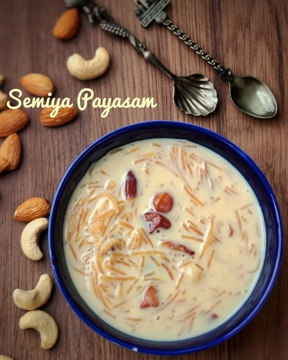

payasam

Description
Payasam is a traditional South Indian dessert, similar to rice pudding, often made with milk, sugar, and rice or vermicelli. It's rich, creamy, and usually flavored with cardamom, nuts, and raisins. Here is how you can prepare a simple and delicious payasam at home
Ingredients
- 1/2 cup vermicelli (seviyan) or 1/4 cup rice (or any other grain like broken wheat)
- 1 liter (4 cups) whole milk
- 1/2 cup sugar (adjust to taste)
- 2 tablespoons ghee (clarified butter)
- 8-10 cashew nuts
- 8-10 raisins
- 1/4 teaspoon cardamom powder
- 1 pinch saffron strands (optional, soaked in 1 tablespoon warm milk)
- 2-3 tablespoons condensed milk (optional for extra creaminess)
Steps
- Heat 1 tablespoon of ghee in a pan.
- Add the vermicelli and roast on medium heat until it turns golden brown.
- Remove and set aside.
- In a large, heavy-bottomed pot, bring the milk to a boil.
- Reduce the heat to low and let the milk simmer, stirring occasionally to prevent it from sticking to the bottom.
- Add the roasted vermicelli to the boiling milk and cook until it becomes soft and the milk thickens slightly.
- Cook on low heat, stirring frequently, until the rice is fully cooked and the milk has thickened. This may take about 20-25 minutes.
- Payasam can be served warm or chilled, depending on your preference.